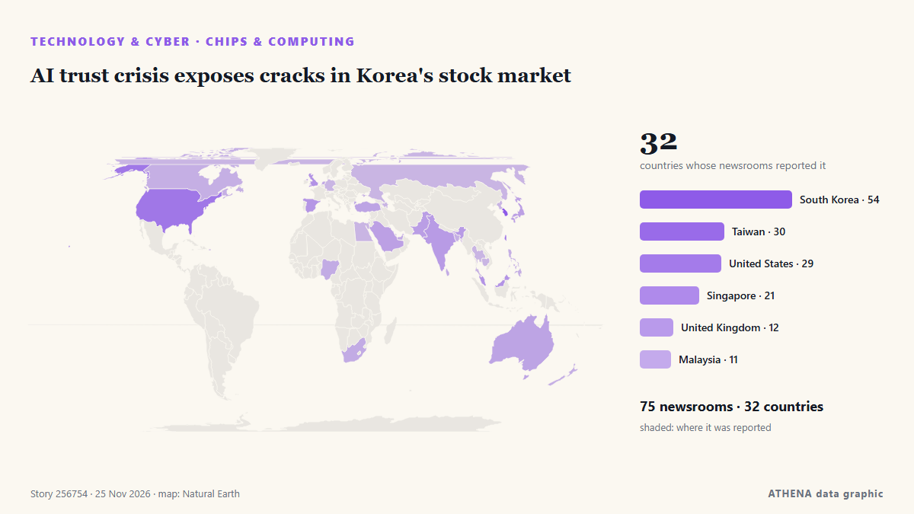

AI trust crisis exposes cracks in Korea's stock market

South Korea's stock market has lost nearly half its value in five months, as doubts about returns on artificial intelligence investment expose the risks of its heavy reliance on semiconductor stocks. από Korea Herald
Τι άλλαξε 19 νέες αναφορές από 11 μέσα τις τελευταίες 24 ώρες.
Δείτε τις πηγές ›Τεκμήριωση: Περιορισμένη
Αναφέρθηκε ανεξάρτητα από 77 μέσα σε 32 χώρες από τις 16 Ιαν, πρώτο το RIETI· η κάλυψη εξασθενεί. Το ATHENA εκτιμά τον κίνδυνο μέτριο (3.1/10), κυρίως λόγω της σοβαρότητάς του και της εμβέλειάς του. Βεβαιότητα 64% (μέτρια): το επιβεβαιώνουν 77 ανεξάρτητα μέσα, μέση αξιοπιστία 73%. Μέσα ανά χώρα: Ταϊβάν (9), Ηνωμένες Πολιτείες (6), Νότια Κορέα (4). Κάλυψη: 16 Ιαν έως 25 Νοε, 7518 ώρες.
Τι άλλαξε: 19 νέες αναφορές από 11 μέσα στο 24ωρο έως 25 Νοε.
Πρώτη διατύπωση: Nvidia pressed Taiwan officials over its indicted manager
ΑυτοματοποιημένοΕπιλέχθηκε, ομαδοποιήθηκε και βαθμολογήθηκε με τη δημοσιευμένη μέθοδο της ATHENA από 23 ανεξάρτητα μέσα. Ο τίτλος είναι του μέσου· οι προτάσεις της ATHENA ακολουθούν σταθερά πρότυπα - δεν τις γράφει παραγωγική ΤΝ. Πώς λειτουργεί →
Πώς να διαβάσετε αυτή τη σελίδα
- Τι διαβάζετε
- 77 μέσα σε 32 χώρες ανέφεραν αυτό το γεγονός. Οι αναφορές παρακάτω εμφανίζονται με τη σειρά που δημοσιεύτηκαν· κάθε τίτλος ανοίγει το αρχικό άρθρο. Το ATHENA δεν γράφει δικά του ρεπορτάζ.
- Η εκτίμησή μας
- Για την καταγραφή — Οι αναφορές περιγράφουν ένα ολοκληρωμένο, εσωτερικό, εμπορικό ή προσωπικό ζήτημα. Το καταγράφουμε ώστε να βλέπετε ποιος το ανέφερε και πότε. Δεν παρακολουθούμε εδώ κίνδυνο ευρύτερης σύγκρουσης.
- Πόσα στοιχεία υπάρχουν
- Περιορισμένη Αντιμετωπίστε τη σελίδα ως πρώιμη αναφορά.
Αφού αφαιρεθούν οι επαναλήψεις, τα άσχετα και τα παλιά στοιχεία, υπολογίζονται 6 από τις 38 αναφορές που παρατίθενται· το 21% των τίτλων αντιστοιχεί στο γεγονός.
- Τι δεν σημαίνει
- Το ATHENA μετρά πώς καλύπτεται ένα γεγονός, όχι αν είναι αληθές. Δεν είναι πρόβλεψη, κρίση για το ποιος έχει δίκιο ή συμβουλή.
- Τι θα την άλλαζε
- Αναφορές από άλλα ανεξάρτητα μέσα που δείχνουν διαφορετική εξέλιξη, ή σαφής επιβεβαίωση ή διάψευση από επίσημη πηγή.
Εκτίμηση R2 · ανανεώνεται με κάθε ενημέρωση της σελίδας. Το ATHENA δεν έχει δημοσιεύσει ακόμη ιστορικό επιδόσεων για αυτές τις εκτιμήσεις· όταν το κάνει, θα συνδέεται εδώ.
Με μια ματιά
Επιλέγεται, βαθμολογείται και γράφεται από τη δημοσιευμένη μεθοδολογία του ATHENA. Κανένας συντάκτης δεν παρεμβαίνει σε μεμονωμένα γεγονότα. Πώς παράγεται ›
| 16 Jan 03:07 UTC | 1 |
|---|---|
| 18 Jan 03:07 UTC | 0 |
| 20 Jan 03:07 UTC | 0 |
| 22 Jan 03:07 UTC | 0 |
| 24 Jan 03:07 UTC | 0 |
| 26 Jan 03:07 UTC | 0 |
| 28 Jan 03:07 UTC | 0 |
| 30 Jan 03:07 UTC | 0 |
| 01 Feb 03:07 UTC | 0 |
| 03 Feb 03:07 UTC | 0 |
| 05 Feb 03:07 UTC | 0 |
| 07 Feb 03:07 UTC | 0 |
| 09 Feb 03:07 UTC | 0 |
| 11 Feb 03:07 UTC | 0 |
| 13 Feb 03:07 UTC | 0 |
| 15 Feb 03:07 UTC | 0 |
| 17 Feb 03:07 UTC | 0 |
| 19 Feb 03:07 UTC | 1 |
| 21 Feb 03:07 UTC | 0 |
| 23 Feb 03:07 UTC | 0 |
| 25 Feb 03:07 UTC | 0 |
| 27 Feb 03:07 UTC | 0 |
| 01 Mar 03:07 UTC | 0 |
| 03 Mar 03:07 UTC | 0 |
| 05 Mar 03:07 UTC | 0 |
| 07 Mar 03:07 UTC | 0 |
| 09 Mar 03:07 UTC | 0 |
| 11 Mar 03:07 UTC | 0 |
| 13 Mar 03:07 UTC | 0 |
| 15 Mar 03:07 UTC | 0 |
| 17 Mar 03:07 UTC | 0 |
| 19 Mar 03:07 UTC | 0 |
| 21 Mar 03:07 UTC | 0 |
| 23 Mar 03:07 UTC | 0 |
| 25 Mar 03:07 UTC | 0 |
| 27 Mar 03:07 UTC | 0 |
| 29 Mar 03:07 UTC | 0 |
| 31 Mar 03:07 UTC | 0 |
| 02 Apr 03:07 UTC | 0 |
| 04 Apr 03:07 UTC | 0 |
| 06 Apr 03:07 UTC | 0 |
| 08 Apr 03:07 UTC | 0 |
| 10 Apr 03:07 UTC | 0 |
| 12 Apr 03:07 UTC | 0 |
| 14 Apr 03:07 UTC | 0 |
| 16 Apr 03:07 UTC | 0 |
| 18 Apr 03:07 UTC | 0 |
| 20 Apr 03:07 UTC | 0 |
| 22 Apr 03:07 UTC | 0 |
| 24 Apr 03:07 UTC | 0 |
| 26 Apr 03:07 UTC | 0 |
| 28 Apr 03:07 UTC | 0 |
| 30 Apr 03:07 UTC | 0 |
| 02 May 03:07 UTC | 0 |
| 04 May 03:07 UTC | 0 |
| 06 May 03:07 UTC | 0 |
| 08 May 03:07 UTC | 0 |
| 10 May 03:07 UTC | 0 |
| 12 May 03:07 UTC | 0 |
| 14 May 03:07 UTC | 0 |
| 16 May 03:07 UTC | 0 |
| 18 May 03:07 UTC | 0 |
| 20 May 03:07 UTC | 0 |
| 22 May 03:07 UTC | 0 |
| 24 May 03:07 UTC | 0 |
| 26 May 03:07 UTC | 0 |
| 28 May 03:07 UTC | 0 |
| 30 May 03:07 UTC | 0 |
| 01 Jun 03:07 UTC | 0 |
| 03 Jun 03:07 UTC | 0 |
| 05 Jun 03:07 UTC | 0 |
| 07 Jun 03:07 UTC | 0 |
| 09 Jun 03:07 UTC | 0 |
| 11 Jun 03:07 UTC | 0 |
| 13 Jun 03:07 UTC | 0 |
| 15 Jun 03:07 UTC | 0 |
| 17 Jun 03:07 UTC | 0 |
| 19 Jun 03:07 UTC | 0 |
| 21 Jun 03:07 UTC | 0 |
| 23 Jun 03:07 UTC | 0 |
| 25 Jun 03:07 UTC | 0 |
| 27 Jun 03:07 UTC | 0 |
| 29 Jun 03:07 UTC | 0 |
| 01 Jul 03:07 UTC | 0 |
| 03 Jul 03:07 UTC | 0 |
| 05 Jul 03:07 UTC | 0 |
| 07 Jul 03:07 UTC | 0 |
| 09 Jul 03:07 UTC | 0 |
| 11 Jul 03:07 UTC | 0 |
| 13 Jul 03:07 UTC | 0 |
| 15 Jul 03:07 UTC | 0 |
| 17 Jul 03:07 UTC | 0 |
| 19 Jul 03:07 UTC | 0 |
| 21 Jul 03:07 UTC | 0 |
| 23 Jul 03:07 UTC | 0 |
| 25 Jul 03:07 UTC | 0 |
| 27 Jul 03:07 UTC | 0 |
| 29 Jul 03:07 UTC | 0 |
| 31 Jul 03:07 UTC | 0 |
| 02 Aug 03:07 UTC | 0 |
| 04 Aug 03:07 UTC | 0 |
| 06 Aug 03:07 UTC | 0 |
| 08 Aug 03:07 UTC | 0 |
| 10 Aug 03:07 UTC | 0 |
| 12 Aug 03:07 UTC | 0 |
| 14 Aug 03:07 UTC | 0 |
| 16 Aug 03:07 UTC | 0 |
| 18 Aug 03:07 UTC | 0 |
| 20 Aug 03:07 UTC | 0 |
| 22 Aug 03:07 UTC | 0 |
| 24 Aug 03:07 UTC | 0 |
| 26 Aug 03:07 UTC | 0 |
| 28 Aug 03:07 UTC | 0 |
| 30 Aug 03:07 UTC | 0 |
| 01 Sep 03:07 UTC | 0 |
| 03 Sep 03:07 UTC | 0 |
| 05 Sep 03:07 UTC | 0 |
| 07 Sep 03:07 UTC | 0 |
| 09 Sep 03:07 UTC | 0 |
| 11 Sep 03:07 UTC | 0 |
| 13 Sep 03:07 UTC | 0 |
| 15 Sep 03:07 UTC | 0 |
| 17 Sep 03:07 UTC | 0 |
| 19 Sep 03:07 UTC | 0 |
| 21 Sep 03:07 UTC | 0 |
| 23 Sep 03:07 UTC | 0 |
| 25 Sep 03:07 UTC | 0 |
| 27 Sep 03:07 UTC | 0 |
| 29 Sep 03:07 UTC | 0 |
| 01 Oct 03:07 UTC | 0 |
| 03 Oct 03:07 UTC | 0 |
| 05 Oct 03:07 UTC | 0 |
| 07 Oct 03:07 UTC | 0 |
| 09 Oct 03:07 UTC | 0 |
| 11 Oct 03:07 UTC | 0 |
| 13 Oct 03:07 UTC | 0 |
| 15 Oct 03:07 UTC | 0 |
| 17 Oct 03:07 UTC | 0 |
| 19 Oct 03:07 UTC | 0 |
| 21 Oct 03:07 UTC | 0 |
| 23 Oct 03:07 UTC | 0 |
| 25 Oct 03:07 UTC | 0 |
| 27 Oct 03:07 UTC | 0 |
| 29 Oct 03:07 UTC | 0 |
| 31 Oct 03:07 UTC | 0 |
| 02 Nov 03:07 UTC | 0 |
| 04 Nov 03:07 UTC | 0 |
| 06 Nov 03:07 UTC | 0 |
| 08 Nov 03:07 UTC | 0 |
| 10 Nov 03:07 UTC | 0 |
| 12 Nov 03:07 UTC | 0 |
| 14 Nov 03:07 UTC | 1 |
| 16 Nov 03:07 UTC | 60 |
| 18 Nov 03:07 UTC | 111 |
| 20 Nov 03:07 UTC | 23 |
| 22 Nov 03:07 UTC | 33 |
| 24 Nov 03:07 UTC | 30 |
Γιατί αυτοί οι αριθμοί
Σημασία
Πόσο πολύ και πόσο εμφανώς αναφέρεται η είδηση.
Κίνδυνος
Τι περιγράφουν οι αναφορές, βαθμολογημένο για πιθανή ζημιά. Δεν είναι πρόβλεψη.
Βεβαιότητα
Πόσο καλά την στηρίζουν οι ανεξάρτητες πηγές.
Εμφανίζεται 64% (υπολογισμός 86%): η αξιολόγηση τεκμηρίωσης είναι περιορισμένη, οπότε η βεβαιότητα κρατιέται στο μέτριο.
Η κάλυψη — ποιος το ανέφερε και πότε
ο τίτλος όπως δημοσιεύτηκε · ανοίγει το πρωτότυπο- RIETI · ΙαπωνίαChips in Japan: Industrial policy, decline and renewal
- RIETI · ΙαπωνίαHow Oil Prices Impact Asian Economies: Evidence from the stock market
- The Next Web · Κάτω ΧώρεςNvidia pressed Taiwan officials over its indicted manager
- Cointelegraph · Ηνωμένες ΠολιτείεςAsian chip stocks tumble ahead of Nvidia Q3 earnings
- European Central Bank press · ΓερμανίαBoris Vujčić: Risks and resilience in the euro area financial system
- The Business Times · ΣιγκαπούρηSmall businesses in Singapore need more guidance to gain AI benefits: Meta study
- Anadolu Agency (English) · ΤουρκίαAsian chip, tech stocks tumble ahead of Nvidia earnings as AI concerns weigh on markets
- NK News · Βόρεια ΚορέαSeoul’s demand for mine apology derailed push for North Korea talks: Sources
- The Business Times · ΣιγκαπούρηSingapore shares fall in tandem with key Asian markets on AI uncertainty; STI down 0.9%
- Offshore Energy · Κάτω ΧώρεςAberdeen subsea robotics firm secures first offshore wind contract in Taiwan
- FXStreet · ΙσπανίαWe could, conceivably, get a burst bubble if Nvida earnings fail to impress
- eNCA · Νότια ΑφρικήECB warns of market risks if AI boom stalls
- The Business Standard (Bangladesh) (working feed) · ΜπανγκλαντέςRising costs, inefficiencies weigh on listed state-owned firms' Q1 earnings
- Stuff · Νέα ΖηλανδίαDon’t screw the crew, and other lessons from Nvidia
- Cointelegraph · Ηνωμένες ΠολιτείεςBitcoin price fails to hold $65K as US stocks drop further on AI nerves
- Taipei Times · ΤαϊβάνOfficial plays down risks amid Nvidia uncertainty
- FXStreet · ΙσπανίαBitcoin nears a critical breaking point as global markets signal a deeper risk reset
- Retail Dive · Ηνωμένες ΠολιτείεςDillard’s grabs some market share again despite weak sales growth
- FXStreet · ΙσπανίαNvidia's terrible November faces a major pivot point on Tuesday
- Cointelegraph · Ηνωμένες ΠολιτείεςNvidia turmoil tests Bitcoin miners’ AI funding plans
- Decrypt · Ηνωμένες ΠολιτείεςFed Is Modeling AI 'Super Intelligence' Scenarios, Including Job Losses and a Stock Market Slump
- The Business Times · ΣιγκαπούρηEuropean stocks ease as tech and miners drag
- Yonhap (English) · Νότια ΚορέαSamsung Electronics, SK hynix cash holdings surge amid AI-driven chip boom
- DigiTimes Asia · ΤαϊβάνUK sovereign AI push needs Taiwan's chip manufacturing and OSAT partners
- DigiTimes Asia · ΤαϊβάνAcer Gaming secures PlayStation Hong Kong distribution rights
- Semiconductor Engineering · Ηνωμένες ΠολιτείεςReducing High-Bandwidth Flash Latency In GPU Systems (Georgia Tech, Nvidia, Stanford)
- The Daily Star — page reader · Μπανγκλαντές‘We’ll honour our sovereign debt’
- Punch · ΝιγηρίαStock market opens week with N351bn investor gains
- The Korea Times · Νότια ΚορέαSamsung Electronics, SK hynix cash holdings surge amid AI-driven chip boom
- DigiTimes Asia · ΤαϊβάνSamsung's reported 8-inch foundry exit sharpens focus on DB HiTek's expansion and pricing power
- DigiTimes Asia · ΤαϊβάνAnalysis: A perfect tech match on paper? The disconnect holding back UK–Taiwan cooperation
- DigiTimes Asia · ΤαϊβάνTaiwan unveils 2027–2030 tech blueprint to strengthen chip leadership, advance sovereign AI
- DigiTimes Asia · ΤαϊβάνSamsung develops custom HBM for Meta, adopts 2nm process
- DigiTimes Asia · ΤαϊβάνSamsung Foundry targets defense, robotics markets through South Korea's homegrown AI chip initiative
- Nikkei Asia · ΙαπωνίαIndian stocks stage rapid rebound as AI hedge accelerates
- DigiTimes Asia · ΤαϊβάνSK Hynix's US revenue tops 60%, exposing Nvidia's growing weight in AI memory sales
- Korea Herald · Νότια ΚορέαSamsung, SK hynix spend W88tr on capex as cash holdings soar
- Korea Herald · Νότια ΚορέαAI trust crisis exposes cracks in Korea's stock market